Proyecto: Skill Swap - Investigación UX/UI y Prototipo Responsive en Figma
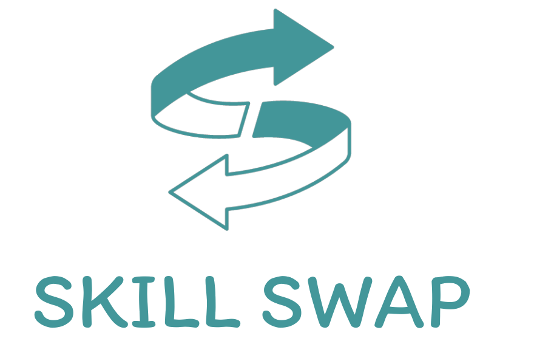
OBJETIVO DEL PROYECTO
Ideación, diseño de identidad visual corporativa digital, investigación UX-UI y desarrollo de un prototipo funcional de una plataforma web basada en la ayuda y cooperación entre usuarios y el intercambio de habilidades. Se trata de un proyecto ficticio realizado como trabajo de Máster para la Escuela de Diseño CEI de Valencia. Skill Swap constituye una comunidad formada por personas que buscan ofrecer servicios a cambio de otros, generando beneficios tanto para el usuario que ofrece un servicio, como para el que lo recibe. El prototipo ha sido desarrollado con Figma y tiene un diseño Responsive, es decir, que se adapta tanto a formato móvil como a ordenador (desktop).
¿CÓMO FUNCIONA?
Skill Swap conecta a personas necesitadas de un servicio con personas capaces de realizar dicho servicio. La plataforma web permite registrarse como
usuario y empezar a solicitar o ofrecer servicios. Registrarse como usuario y tener una cuenta de Skill Swap aporta múltiples beneficios, como la posibilidad de
obtener y acumular puntos (Skill Coins) o guardar tus preferencias, servicios y perfiles favoritos. También podrás competir con el resto de usuarios de una forma sana y divertida
por ascender en los rangos y demostrar tu compromiso, cooperación y solidaridad.
Para comenzar en Skill Swap, debes decidir si deseas solicitar u ofrecer un servicio. En el primer caso, existe una sección llamada "explorar", donde encontrarás un catálogo de
servicios ofrecidos por otros usuarios. Si ves alguno que te interese, puedes iniciar un "swap" y empezar a chatear con el otro usuario para acordar el lugar, el horario, las condiciones del
servicio y el número de Skill Coins que deberás abonar por el trabajo solicitado. Una vez concretados los detalles, se inicia el "swap" y se realiza/recibe el servicio según lo establecido.
Los Skill Coins se consiguen al ofrecer tu ayuda a otras personas y se pueden canjear a la hora de requerir un determinado servicio. Cuanto más ayudes a los demás y más solidaridad muestres, irás subiendo de nivel
en un divertido sistema de rangos que incluye la plataforma. Comenzando por Caracol 1, podrás ir escalando posiciones hasta llegar a Tigre 3, que es el máximo nivel y lo poseen aquellos usuarios más altruistas y comprometidos
con el proyecto. Así, mediante el intercambio de servicios, Skill Swap ofrece una oportunidad de ayudar y ser ayudados de forma gratuita, en una comunidad inclusiva y agradable.
PROCESO DE TRABAJO
1
Se desarrolló la idea de Skill Swap con el objetivo de crear una plataforma web a modo de comunidad donde los usuarios pudieran
intercambiar habilidades sin coste alguno, ayudándose mutuamente. Para ello, se seleccionó una paleta de colores y una tipografía adecuadas al contexto
del proyecto. Los colores primarios fueron el azul verdoso (#439699) y el blanco clásico (#FFFFFF), utilizando un azul oscuro (#263238) y un azul oscuro más transparente (#263238) como secundarios. En los colores terciarios nos encontramos
con un amarillo limón (#FFCA28) que destaca principalmente en textos referentes al sistema de valoración por estrellas de Skill Swap, para valorar los servicios recibidos, y también el rojo cadmio (#CC4F47) y el naranja (#DF7C21) en alertas, textos
referentes a los Skill Coins y otra información relevante. En cuanto a la tipografía, se utilizó una Itim a distintos tamaños: 10, 12, 16 y 24px.
El siguiente paso fue el de organizar y segmentar la web en distintos apartados.
Las secciones o páginas que se pueden encontrar en Skill Swap son las siguientes:
Inicio
Archivo
Social
Hucha
Rankings
En la página de inicio encontrarás una extensa lista de perfiles de usuarios que buscan tu ayuda, y si te consideras capacitado para realizar el
servicio, puedes iniciar un "swap" con ellos a cambio de Skill Coins. En la sección "archivo" podrás descubrir los servicios más populares en tu ciudad, buscar nuevos proyectos
filtrándolos por categoría, o consultar tu lista de amigos (perfiles que has guardado con anterioridad). En la sección social, podrás acceder a los chats abiertos con otros usuarios
y reanudar las conversaciones, así como revisar los "swaps" que tienes pendientes. En la sección "hucha" encontrarás el total de Skill Coins que has ido acumulando y
podrás echar un vistazo al historial de intercambios que has realizado en los últimos días. Por último, mediante la sección "rankings" podrás conocer en todo momento tu rango de Skill Swap
y los puntos de experiencia que necesitas para alcanzar el siguiente rango.
Los rangos disponibles, de menor a mayor, son:
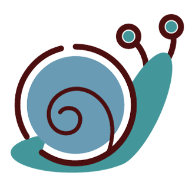
Caracol 1-2-3
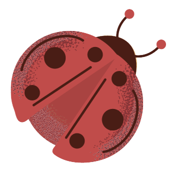
Mariquita 1-2-3
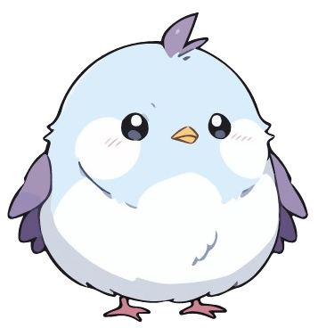
Pájaro 1-2-3
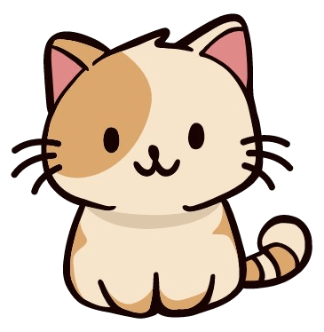
Gato 1-2-3
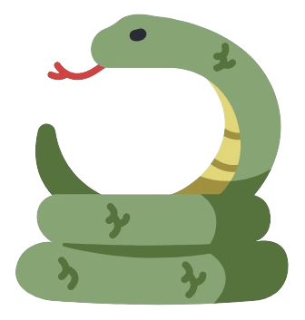
Serpiente 1-2-3
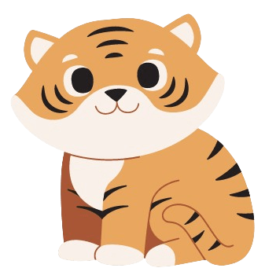
Tigre 1-2-3
2
Se utilizó Figma para el diseño y desarrollo del prototipo del proyecto. Se realizó una versión en formato móvil y otra en formato escritorio o desktop, utilizando toda
la información obtenida a través del Design Thinking para tratar de cubrir las necesidades del usuario y conseguir que se sienta cómodo en la comunidad de Skill Swap, navegando por la web e
interaccionando con el resto de usuarios. También se priorizó un diseño visual atractivo con el que lograr que el manejo de la herramienta de intercambio de habilidades fuese lo más
amena y agradable posible.
Una vez finalizado el prototipo, se probó su funcionamiento en distintos dispositivos y se corrigieron algunos errores de accesibilidad, como el tamaño de los textos en formato móvil o
la visibilidad de algunas imágenes que no se procesaban correctamente o quedaban pixeladas al ser demasiado grandes. Tras varios cambios y nuevos testeos, se dio por concluido el proyecto.
3
Tras el desarrollo del proyecto, se trabajó en el diseño de una memoria en formato PDF donde se explicaba con detalle el proceso de trabajo, los estudios realizados en el Design Thinking y el funcionamiento general de Skill Swap. Se utilizó la misma paleta de colores y la misma tipografía para que, tanto proyecto como memoria, mostrasen la misma apariencia y armonía visual.
PROGRAMAS Y SOFTWARE
Figma
Canva
GIMP
GALERÍA DE IMÁGENES
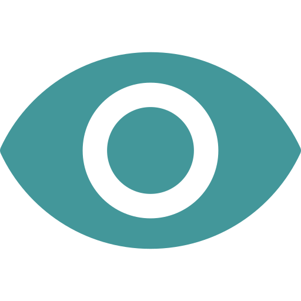
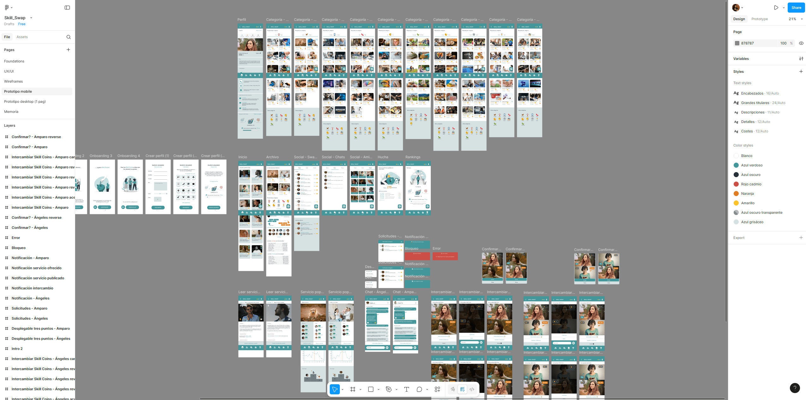
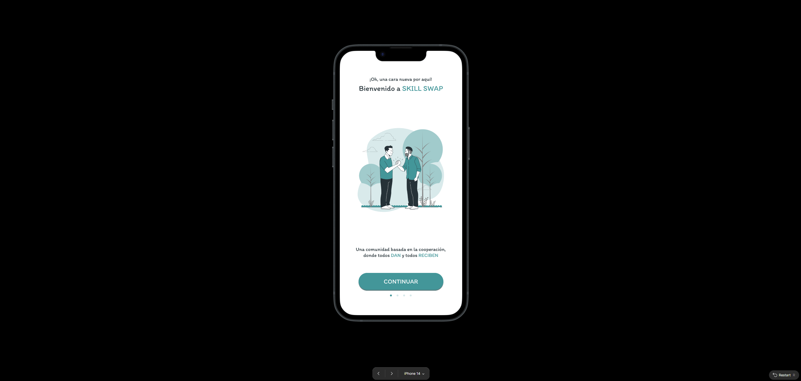
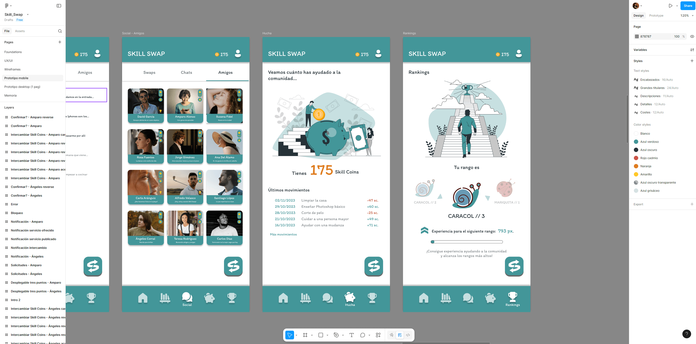
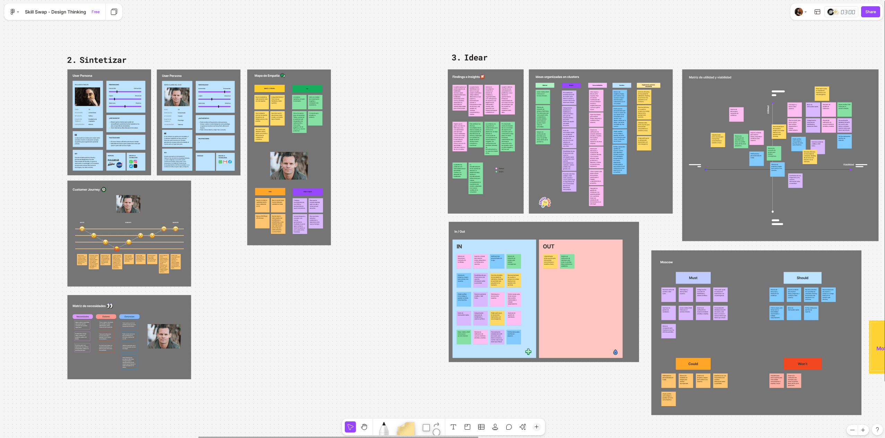
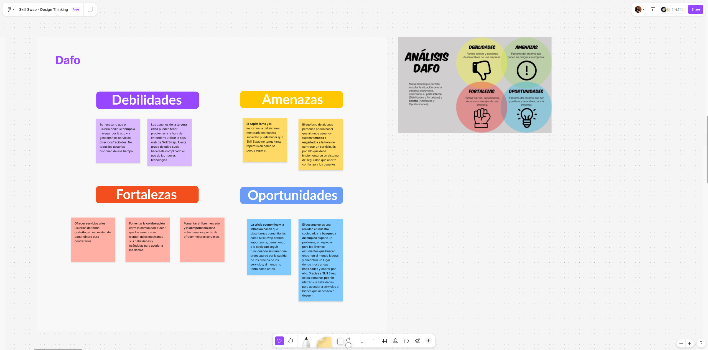